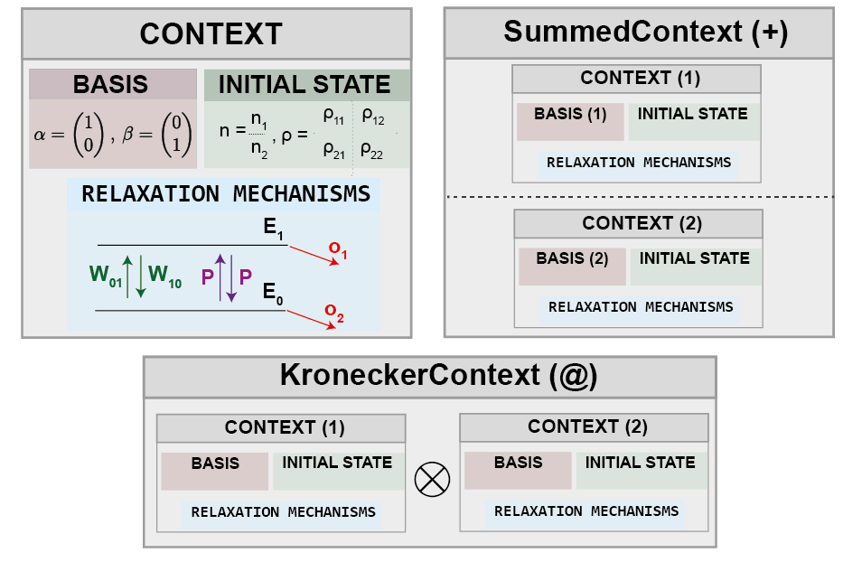

Relaxation Context
The mars.population.contexts.Context class provides a comprehensive framework for defining relaxation mechanisms and initial states in time-resolved EPR spectroscopy.
It encapsulates the physical model of how spin systems evolve after initial excitation.
Overview
{kind=link}
A Context object can specify:
The basis in which relaxation parameters, density matrix and initial populations are defined
Initial populations or density matrix
Transition probabilities (free, driven, and loss processes)
Dephasing rates
Custom relaxation superoperators
The Context class automatically handles basis transformations, and proper composition of kinetic matrices or relaxation superoperators.
Key Features
Flexible Basis Definition: Support for multiple predefined bases (eigen, zfs, multiplet, product
Multiple Relaxation Paradigm: Compatible with both population-based and density matrix-based dynamics
Lindblad Formalism: Ensures physical validity through proper jump operators
Context Algebra: Supports addition and multiplication operations for constructing complex relaxation scenarios
Contents
Quick Example
import torch
from mars import spin_model. population
# Create a triplet spin system
g_tensor = spin_model.Interaction(2.003, dtype=torch.float64)
zfs = spin_model.DEInteraction([600e6, -80e6], dtype=torch.float64)
base_system = spin_model.SpinSystem(
electrons=[1.0],
g_tensors=[g_tensor],
electron_electron=[(0, 0, zfs)]
)
sample = spin_model.MultiOrientedSample(
base_spin_system=base_system,
ham_strain=2e7,
gauss=0.0008,
lorentz=0.0008
)
# Define initial populations in ZFS basis
initial_pops = [0.6, 0.1, 0.3]
# Define loss rates
out_probs = torch.tensor([80.0, 40.0, 60.0]) # s^-1
# Create context
context = population.Context(
sample=sample,
basis="zfs",
init_populations=initial_pops,
out_probs=out_probs
)
See Also
Relaxation Parameters and Initial States - Detailed description of transition probabilities
Lindblad Superoperator Construction - How MarS constructs Lindblad superoperators
Basis Transformations - Transformation between different bases
Complex Context Construction - Combining contexts using algebra operations